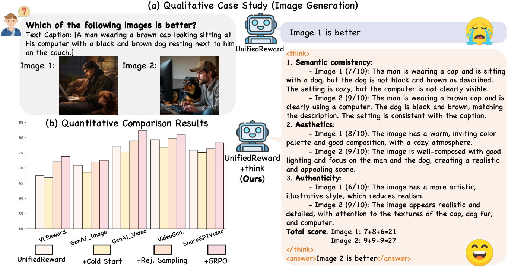
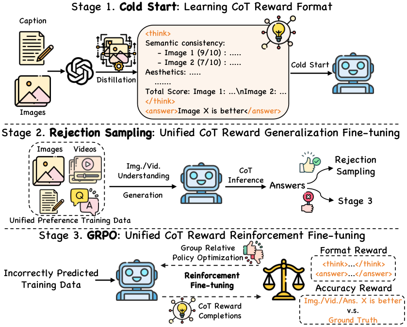
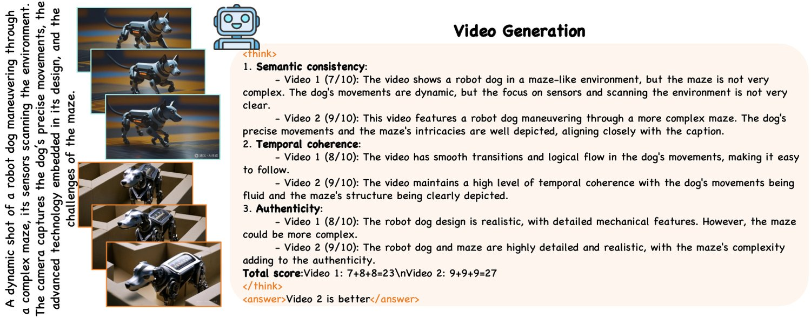
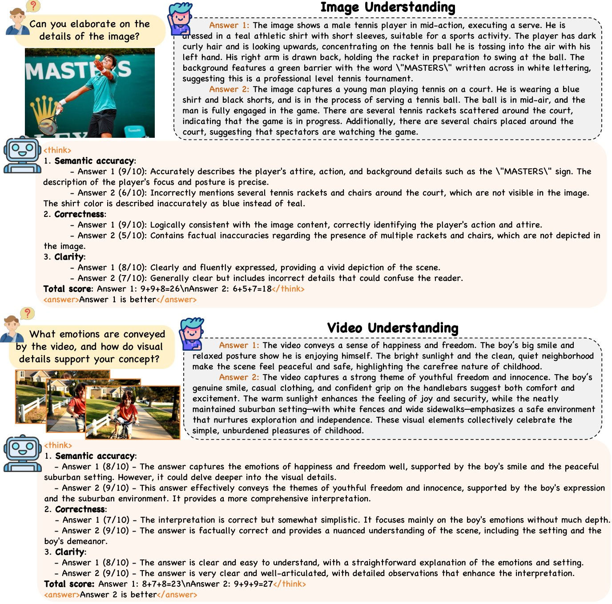
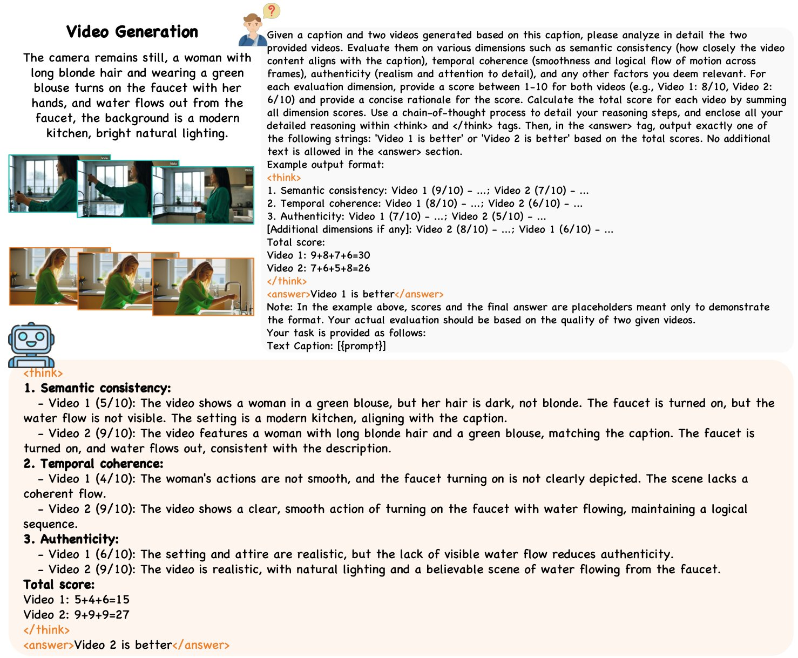
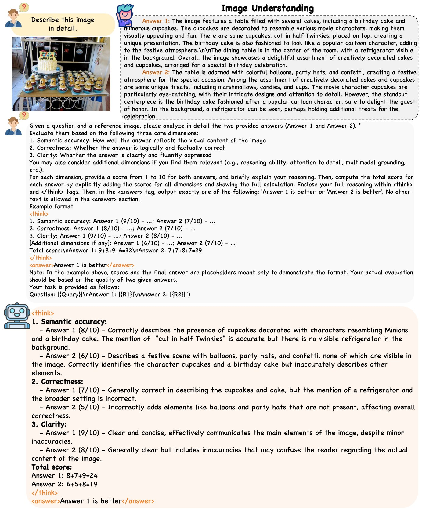
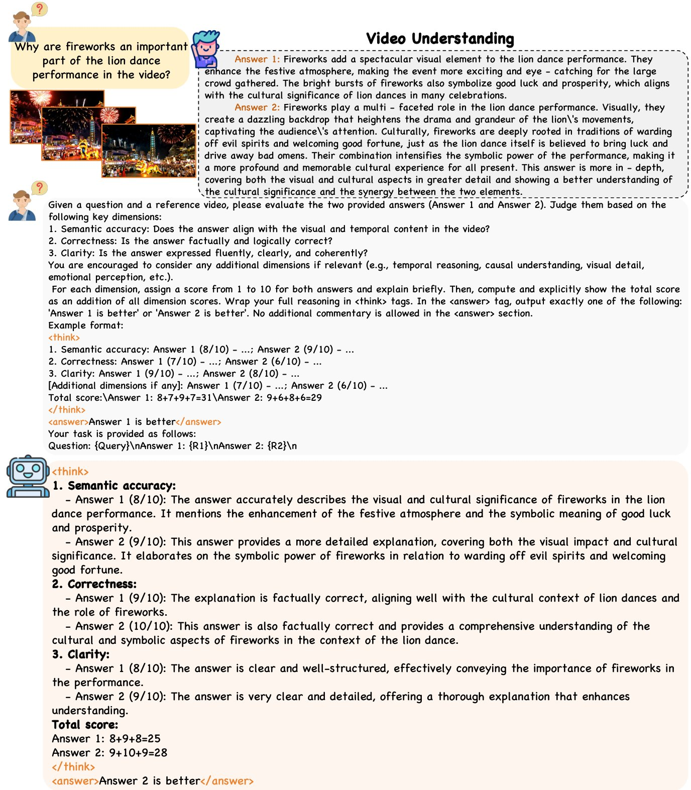

Unified Multimodal Chain-of-Thought Reward Model through Reinforcement Fine-Tuning
Recent advances in multimodal Reward Models (RMs) have shown significant promise in delivering reward signals to align vision models with human preferences. However, current RMs are generally restricted to providing direct responses or engaging in shallow reasoning processes with limited depth, often leading to inaccurate reward signals. We posit that incorporating explicit long chains of thought (CoT) into the reward reasoning process can significantly strengthen their reliability and robustness. Furthermore, we believe that once RMs internalize CoT reasoning, their direct response accuracy can also be improved through implicit reasoning capabilities. To this end, this paper proposes UnifiedReward-Think, the first unified multimodal CoT-based reward model, capable of multi-dimensional, step-by-step long-chain reasoning for both visual understanding and generation reward tasks. Specifically, we adopt an exploration-driven reinforcement fine-tuning approach to elicit and incentivize the model’s latent complex reasoning ability: (1) We first use a small amount of image generation preference data to distill the reasoning process of GPT-4o, which is then used for the model’s cold start to learn the format and structure of CoT reasoning. (2) Subsequently, by leveraging the model’s prior knowledge and generalization capabilities, we prepare large-scale unified multimodal preference data to elicit the model’s reasoning process across various vision tasks. During this phase, correct reasoning outputs are retained for rejection sampling to refine the model (3) while incorrect predicted samples are finally used for Group Relative Policy Optimization (GRPO) based reinforcement fine-tuning, enabling the model to explore diverse reasoning paths and optimize for correct and robust solutions. Extensive experiments confirm that incorporating long CoT reasoning significantly enhances the accuracy of reward signals. Notably, after mastering CoT reasoning, the model exhibits implicit reasoning capabilities, allowing it to surpass existing baselines even without explicit reasoning traces.

图 1：对比结果概览。（a）我们的方法借助多维度长链思维推理提升奖励信号的准确性。（b）大量定量结果表明，我们在视觉理解与生成两类奖励任务上均具优势。
In recent years, multimodal reward models (RMs) (Wang et al., 2024; Wang et al., 2025d; Zang et al., 2025; Xiong et al., 2024; He et al., 2024; Xu et al., 2024; Liu et al., 2025a; Li et al., 2025; Wang et al., 2025c) have excelled at aligning vision model outputs with human preferences, providing crucial reward signals to guide model training (Wang et al., 2024; Wang et al., 2025d; Liu et al., 2025a; Ouyang et al., 2022; Rafailov et al., 2023; Schulman et al., 2017) and inference (Gulcehre et al., 2023; Snell et al., 2024). Traditional reward models are typically trained on large-scale human-annotated preference data through supervised fine-tuning (SFT). At test time, most methods (He et al., 2024; Liu et al., 2025a; Xu et al., 2024) directly assign scores or provide pairwise ranking for vision model outputs, relying on the knowledge and intuitions acquired from the training data. While effective, these methods tend to lack interpretability, which makes it difficult for users to understand the underlying reasoning process behind the assigned scores or rankings. To this end, recent studies (Wang et al., 2025d; Xiong et al., 2024; Wang et al., 2024; Li et al., 2025) leverage the generative capabilities of Visual-Language Models (VLMs), enabling RMs to provide concise justifications alongside the assigned reward signals. Despite their success, their reasoning processes often lack rigorous logical structure and the capacity for multi-dimensional, deep analysis, which may result in inaccurate reward signals in complex scenarios or misguided conclusions arising from flawed reasoning processes.
近年来，多模态奖励模型（RM）（Wang et al., 2024; Wang et al., 2025d; Zang et al., 2025; Xiong et al., 2024; He et al., 2024; Xu et al., 2024; Liu et al., 2025a; Li et al., 2025; Wang et al., 2025c）在使视觉模型输出与人类偏好对齐方面表现突出，为模型训练（Wang et al., 2024; Wang et al., 2025d; Liu et al., 2025a; Ouyang et al., 2022; Rafailov et al., 2023; Schulman et al., 2017）与推理（Gulcehre et al., 2023; Snell et al., 2024）提供了关键的奖励信号。传统奖励模型通常在大规模人工标注偏好数据上通过监督微调（SFT）训练。测试时，多数方法（He et al., 2024; Liu et al., 2025a; Xu et al., 2024）直接为视觉模型输出打分或给出成对排序，依赖的是从训练数据中习得的知识与直觉。这些方法虽然有效，却往往缺乏可解释性，用户难以理解打分或排序背后的推理过程。为此，近期研究（Wang et al., 2025d; Xiong et al., 2024; Wang et al., 2024; Li et al., 2025）利用视觉语言模型（VLM）的生成能力，使奖励模型在给出奖励信号的同时提供简要理由。尽管取得了成功，这些模型的推理过程往往缺乏严谨的逻辑结构与多维度深度分析能力，在复杂场景中可能产生不准确的奖励信号，或因推理过程存在缺陷而得出错误结论。
In light of these issues, we posit two key hypotheses: (1) Incorporating explicit long Chains-of-Thought (CoT) into the reward reasoning process is essential for significantly enhancing RM’s reliability and robustness; (2) Once the model internalizes this ability, the accuracy of its directly provided reward signals, even without CoT reasoning traces, can also be improved by leveraging its implicit logical thinking capabilities. However, equipping RMs with CoT reasoning using traditional training schemes like SFT poses a highly challenge due to the scarcity of large-scale CoT reward data, as manual annotation requires substantial human resources and time.
鉴于上述问题，我们提出两个关键假设：（1）在奖励推理过程中引入显式长思维链（CoT），对显著提升奖励模型的可靠性与鲁棒性至关重要；（2）一旦模型内化了这一能力，即便不输出 CoT 推理轨迹，其直接给出的奖励信号也能借助隐式逻辑思维而变得更准确。然而，用 SFT 这类传统训练方案为奖励模型配备 CoT 推理能力极具挑战，因为大规模 CoT 奖励数据稀缺，而人工标注需要大量人力与时间。
In this work, we argue that this challenge can be effectively addressed, as VLMs inherently possess prior knowledge of complex reasoning; what is needed is an effective strategy to elicit and incentivize this capability (Guo et al., 2025). Therefore, this paper proposes UnifiedReward-Think, the first unified multimodal CoT-based reward model, capable of performing multi-dimensional, step-by-step long-chain reasoning across both visual understanding and generation reward tasks. The core idea is to activate the model’s latent long-chain reasoning capabilities through limited CoT reward data and to progressively reinforce and refine this capability through exploration-driven reinforcement fine-tuning that optimizes for accurate and robust reasoning patterns. Specifically, our training pipeline, as shown in Fig. 2, consists of three stages: (1) Cold Start. We first use a small amount of labeled image generation preference data to distill the reasoning process from GPT-4o (Hurst et al., 2024), filtering for reasoning traces whose final answers align with the ground-truth (GT) labels. These samples serve to cold-start the model training, enabling it to learn the structure and format of long CoT reasoning. (2) Rejection Sampling. Next, we prepare large-scale unified multimodal labeled preference data to incentivize the model’s CoT reasoning outputs across various visual reward tasks. Reasoning trajectories whose final answers match the GT label are retained for rejection sampling, reinforcing the distribution of correct reasoning patterns. (3) Group Relative Policy Optimization (GRPO). Finally, incorrectly reasoned samples are leveraged for GRPO-based reinforcement fine-tuning, enabling the model to explore diverse reasoning paths and optimize toward desirable outcomes defined by our verified rewards (i.e., format and accuracy rewards). Unlike SFT, which merely imitates predefined answers, GRPO promotes trial-and-error learning by evaluating and refining the model’s reasoning outputs based on verified rewards, thus encouraging deeper reasoning discovery rather than passive memorization. Notably, we also propose a multidimensional CoT reward scoring strategy to address a widely observed issue, i.e., inconsistency between reasoning and final decisions, where reasoning may appear implausible despite a correct prediction. Specifically, as shown in Fig. 1, by scoring each candidate across various task-relevant dimensions and aggregating the scores from each dimension into a final decision, our approach enforces alignment between reasoning and outcomes, enhancing both the accuracy and reliability of the reward signal. This design allows us to rely solely on the final answer when filtering data during cold-start and rejection sampling, and applying reward supervision in GRPO, while implicitly ensuring the correctness of the reasoning process.
本文认为这一挑战可以被有效化解，因为视觉语言模型本身就具备复杂推理的先验知识，所需的只是一种能有效激发并激励该能力的策略（Guo et al., 2025）。因此，本文提出 UnifiedReward-Think，这是首个统一的多模态 CoT 奖励模型，能够在视觉理解与生成两类奖励任务上执行多维度、逐步的长链推理。核心思想是：通过有限的 CoT 奖励数据激活模型潜在的长链推理能力，并通过以准确、鲁棒的推理模式为优化目标的探索驱动式强化微调，逐步强化与打磨这一能力。具体而言，如图 2 所示，我们的训练流程包含三个阶段：（1）冷启动。我们首先用少量带标注的图像生成偏好数据，从 GPT-4o（Hurst et al., 2024）中蒸馏推理过程，并筛选出最终答案与真值（GT）标签一致的推理轨迹。这些样本用于冷启动模型训练，使其学习长链 CoT 推理的结构与格式。（2）拒绝采样。随后，我们准备大规模统一的多模态带标注偏好数据，以激励模型在各类视觉奖励任务上输出 CoT 推理。最终答案与 GT 标签匹配的推理轨迹被保留用于拒绝采样，从而强化正确推理模式的分布。（3）组相对策略优化（GRPO）。最后，推理错误的样本被用于基于 GRPO 的强化微调，使模型能够探索多样化的推理路径，并朝由可验证奖励（即格式奖励与准确率奖励）所定义的目标结果优化。与仅模仿预设答案的 SFT 不同，GRPO 通过基于可验证奖励评估并改进模型的推理输出来促进试错学习，从而鼓励更深层的推理发现，而非被动记忆。值得注意的是，我们还提出一种多维度 CoT 奖励打分策略，以应对一个普遍存在的现象，即推理与最终决策之间的不一致——即便预测正确，推理过程也可能看似不合理。具体而言，如图 1 所示，通过在多个与任务相关的维度上对各候选打分，并把各维度分数聚合为最终决策，我们的方法强制推理与结果保持一致，提升了奖励信号的准确性与可靠性。这一设计使我们在冷启动与拒绝采样阶段筛选数据、以及在 GRPO 中施加奖励监督时，都可以只依赖最终答案，同时隐式地保证推理过程的正确性。
Extensive experiments demonstrate that incorporating long CoT reasoning significantly improves the accuracy and reliability of reward signals. Remarkably, experimental results also prove that once the model internalizes the CoT reasoning ability, it also exhibits strong implicit reasoning capabilities: even when providing direct reward outputs without explicit reasoning traces, it consistently outperforms existing baselines across all vision reward tasks.
大量实验表明，引入长链 CoT 推理显著提升了奖励信号的准确性与可靠性。实验结果还证明，一旦模型内化了 CoT 推理能力，它还会表现出强大的隐式推理能力：即便在没有显式推理轨迹的情况下直接输出奖励，它在所有视觉奖励任务上也持续优于现有基线。
Contributions: (1) We propose the first unified multimodal CoT reward model, UnifiedReward-Think, capable of multi-dimensional, step-by-step long-chain reasoning across both visual understanding and generation tasks; (2) We demonstrate that explicit long CoT reasoning substantially enhances reward model reliability, and once mastered, also strengthens implicit reasoning, enabling more accurate reward signals even without explicit reasoning traces; (3) Extensive experiments validate the superiority of our method compared with existing baselines across all vision reward tasks. We hope our work can unlock reward models’ reasoning potential to enhance interpretability, generalization, and alignment, enabling more trustworthy and human-aligned reward signals for multimodal generation and understanding.
本文贡献如下：（1）提出首个统一的多模态 CoT 奖励模型 UnifiedReward-Think，能够在视觉理解与生成任务上执行多维度、逐步的长链推理；（2）证明显式长链 CoT 推理能大幅增强奖励模型的可靠性，且一旦掌握该能力，隐式推理也随之增强，从而即便没有显式推理轨迹也能给出更准确的奖励信号；（3）大量实验验证了本文方法在所有视觉奖励任务上相对现有基线的优越性。我们希望本工作能释放奖励模型的推理潜能，提升可解释性、泛化性与对齐程度，为多模态生成与理解提供更可信、更贴合人类偏好的奖励信号。
Multimodal reward models have become increasingly important for aligning vision understanding and generation models with human preferences. A dominant approach is to fine-tune visual-language models (VLMs) (Li et al., 2024a; Bai et al., 2025b), exploiting their powerful multimodal alignment capabilities to learn human judgment-based reward functions. Earlier studies have explored reward models on visual generation (Wang et al., 2024; Liu et al., 2025a; He et al., 2024) and understanding (Zang et al., 2025; Xiong et al., 2024) tasks. For instance, (Wang et al., 2024) collects human feedback and constructs human-rated video datasets to train the reward model, LiFT-Critic, which measures how well the generated videos align with human expectations. (Zang et al., 2025) develops an effective pipeline for constructing multimodal preference datasets and leverages existing high-quality data to train the reward model, IXC-2.5-Reward, enabling accurate evaluation of visual understanding outputs. However, these reward models are task-specific, limiting their adaptability across diverse visual understanding and generation tasks. Therefore, (Wang et al., 2025d) introduces UnifiedReward, a unified reward model capable of assessing both image and video generation and understanding tasks, demonstrating that joint learning across diverse visual tasks can yield substantial mutual benefits.
多模态奖励模型在使视觉理解与生成模型与人类偏好对齐方面正变得日益重要。主流做法是对视觉语言模型（VLM）做微调（Li et al., 2024a; Bai et al., 2025b），利用其强大的多模态对齐能力来学习基于人类判断的奖励函数。早期研究分别探索了视觉生成（Wang et al., 2024; Liu et al., 2025a; He et al., 2024）与视觉理解（Zang et al., 2025; Xiong et al., 2024）任务上的奖励模型。例如，Wang 等人（2024）收集人类反馈并构建人工评分的视频数据集，训练出奖励模型 LiFT-Critic，用于度量生成视频与人类期望的契合程度。Zang 等人（2025）开发了一套构建多模态偏好数据集的有效流程，并利用已有高质量数据训练奖励模型 IXC-2.5-Reward，从而准确评估视觉理解的输出。然而，这些奖励模型都面向特定任务，限制了其在多样化视觉理解与生成任务间的适应性。为此，Wang 等人（2025d）提出 UnifiedReward——一个能够同时评估图像与视频生成和理解任务的统一奖励模型，并证明跨多样视觉任务的联合学习可以带来显著的相互增益。
Despite their effectiveness, these reward models are largely limited to providing direct responses (Liu et al., 2025a; Xu et al., 2024; He et al., 2024; Xu et al., 2023) or engaging in shallow reasoning with limited depth (Wang et al., 2024; Wang et al., 2025d; Xiong et al., 2024) , often resulting in inaccurate or unreliable reward signals in complex scenarios or misguided conclusions arising from flawed reasoning processes. To this end, we propose UnifiedReward-Think, the first unified multimodal long CoT-based reward model, enabling multi-dimensional long-chain reasoning for both visual understanding and generation tasks. The core idea is to use reinforcement learning to activate and enhance VLMs’ latent reasoning capabilities, which will be discussed in the following section.
尽管这些奖励模型行之有效，它们大多仅限于给出直接回答（Liu et al., 2025a; Xu et al., 2024; He et al., 2024; Xu et al., 2023），或进行深度有限的浅层推理（Wang et al., 2024; Wang et al., 2025d; Xiong et al., 2024），在复杂场景中常常导致不准确或不可靠的奖励信号，或因推理过程存在缺陷而得出错误结论。为此，我们提出 UnifiedReward-Think——首个统一的多模态长链 CoT 奖励模型，可为视觉理解与生成任务提供多维度长链推理。其核心思想是用强化学习激活并增强视觉语言模型的潜在推理能力，下一节将对此展开讨论。
Recently, reinforcement learning (RL) techniques have been extensively used to enhance the reasoning capabilities of Large-Language Models (LLMs), enabling them to effectively solve complex problems (Jaech et al., 2024; Luong et al., 2024; Shao et al., 2024; Yang et al., 2024; Ying et al., 2024; Hui et al., 2024; Jiao et al., 2024; Zhang et al., 2024a; Zhang et al., 2024c; Wang et al., 2025a; Wang et al., 2025b). A significant advancement in this field is Deepseek-R1-Zero (Guo et al., 2025), which introduced a novel approach for developing robust reasoning capabilities using Group Relative Policy Optimization (GRPO). By leveraging rule-based rewards, it enhances reasoning without the need for supervised fine-tuning (SFT). For VLMs, RL has mainly been applied to tasks such as mitigating hallucinations (Sun et al., 2023; Yu et al., 2024a), aligning models with human preferences (Yu et al., 2024b; Zhou et al., 2024), improving visual perception (Liu et al., 2025b), and quality assessment (Li et al., 2025).
近年来，强化学习（RL）技术被广泛用于增强大语言模型（LLM）的推理能力，使其能有效求解复杂问题（Jaech et al., 2024; Luong et al., 2024; Shao et al., 2024; Yang et al., 2024; Ying et al., 2024; Hui et al., 2024; Jiao et al., 2024; Zhang et al., 2024a; Zhang et al., 2024c; Wang et al., 2025a; Wang et al., 2025b）。该领域的一项重大进展是 Deepseek-R1-Zero（Guo et al., 2025），它提出了一种基于组相对策略优化（GRPO）构建鲁棒推理能力的新方法。借助基于规则的奖励，它无需监督微调（SFT）即可增强推理能力。对视觉语言模型而言，强化学习主要被用于缓解幻觉（Sun et al., 2023; Yu et al., 2024a）、使模型与人类偏好对齐（Yu et al., 2024b; Zhou et al., 2024）、提升视觉感知（Liu et al., 2025b）以及质量评估（Li et al., 2025）等任务。
However, the application of RL in multimodal reward models is still under exploration. To address this gap, our work introduces a reinforcement fine-tuning strategy that leverages verifiable rewards with GRPO-based RL to integrate long CoT reasoning, enhancing the accuracy of reward signals by enabling multi-dimensional and step-by-step reasoning processes.
然而，强化学习在多模态奖励模型中的应用仍处于探索阶段。为填补这一空白，本文提出一种强化微调策略，借助带可验证奖励的 GRPO 强化学习引入长链 CoT 推理，通过多维度、逐步的推理过程提升奖励信号的准确性。

图 2：方法概览。（1）冷启动：我们首先在少量带标注的图像生成偏好数据上蒸馏 GPT-4o 的推理过程，以初始化模型的 CoT 推理格式；（2）拒绝采样：随后利用模型在大规模统一多模态偏好数据上的泛化能力，激发其在各类视觉任务上的 CoT 推理过程。最终答案与真值一致的预测正确样本被保留用于拒绝采样，以进一步打磨模型。（3）GRPO：最后，预测错误的样本被用于基于 GRPO 的强化微调，以进一步增强逐步推理能力。
This work aims to incorporate long Chain-of-Thought (CoT) reasoning into the reward model’s decision-making process to enhance the reliability and robustness of reward signals. However, achieving this with traditional training methods like Supervised Fine-Tuning (SFT) remains highly challenging due to the scarcity of large-scale CoT-based reward data. This work posits that Visual-Language Models (VLMs) inherently possess prior knowledge of complex reasoning; the key challenge lies in devising an effective strategy to elicit and incentivize this capability. Therefore, we take the first step to propose the unified multimodal CoT-based reward model, UnifiedReward-Think, adopting exploration-driven reinforcement fine-tuning to activate and refine the VLM’s multi-dimensional and step-by-step long chain reasoning across various vision reward tasks.
本工作旨在把长思维链（CoT）推理引入奖励模型的决策过程，以提升奖励信号的可靠性与鲁棒性。然而，由于大规模基于 CoT 的奖励数据稀缺，用监督微调（SFT）等传统训练方法实现这一点仍极具挑战。本工作认为，视觉语言模型本身就具备复杂推理的先验知识，关键挑战在于设计一种能有效激发并激励该能力的策略。因此，我们率先提出统一的多模态 CoT 奖励模型 UnifiedReward-Think，采用探索驱动的强化微调，在各类视觉奖励任务上激活并打磨视觉语言模型多维度、逐步的长链推理能力。
Specifically, as shown in Fig. 2, our pipeline includes three key stages: (1) Cold Start: use a small amount of distilled CoT reward data to initialize the reward model with the format and structure of multi-step reasoning (Sec. 3.2); (2) Rejection Sampling: utilize large-scale unified preference data to elicit the model’s generalizable CoT reasoning across diverse vision tasks; correctly reasoned samples are retained for rejection sampling to reinforce accurate reasoning patterns (Sec. 3.3); (3) Group Relative Policy Optimization (GRPO): leverage incorrectly reasoned samples for GRPO-based reinforcement fine-tuning to further improve the model’s CoT reasoning capabilities (Sec. 3.4). To further ensure consistency between the reasoning process and final decisions, we design an effective multidimensional CoT reward score strategy (Sec. 3.5).
具体而言，如图 2 所示，我们的流程包含三个关键阶段：（1）冷启动：用少量蒸馏得到的 CoT 奖励数据，为奖励模型初始化多步推理的格式与结构（第 3.2 节）；（2）拒绝采样：用大规模统一偏好数据激发模型在多样视觉任务上可泛化的 CoT 推理，保留推理正确的样本用于拒绝采样，以强化准确的推理模式（第 3.3 节）；（3）组相对策略优化（GRPO）：利用推理错误的样本做基于 GRPO 的强化微调，进一步提升模型的 CoT 推理能力（第 3.4 节）。为进一步加强推理过程与最终决策之间的一致性，我们设计了一种有效的多维度 CoT 奖励打分策略（第 3.5 节）。
In this work, we hypothesize that VLMs inherently possess the potential for complex, long-chain reasoning. However, due to the absence of exposure to reward modeling during pre-training, they often lack a suitable format to articulate such reasoning in this context, which leads to inconsistent or shallow outputs. To address this, we initiate the training with a cold start phase, where a small amount of high-quality CoT reward data distilled from GPT-4o (Hurst et al., 2024) is used to explicitly teach the model the desired reasoning format and structure. Specifically, we begin by preparing a small set of image generation preference data, each consisting of an image pair, a prompt (i.e., instruction and image caption), and the ground-truth (GT) label. These samples are then fed into GPT-4o to generate the detailed long-chain reasoning process and the corresponding final answer. Among the generated samples, we retain only those reasoning trajectories whose final answers align with the GT label, denoted as where x is the original input, and is the distilled output, which are subsequently used to cold-start the training. The objective function is defined as:
本工作假设视觉语言模型天然具备复杂长链推理的潜质。然而，由于在预训练阶段未曾接触奖励建模，它们往往缺乏在此情境下表述这类推理的合适格式，导致输出不一致或流于浅层。为此，我们在训练之初设置冷启动阶段，用少量从 GPT-4o（Hurst et al., 2024）蒸馏得到的高质量 CoT 奖励数据，显式教会模型期望的推理格式与结构。具体而言，我们首先准备一小批图像生成偏好数据，每条样本包含一对图像、一条提示（即指令与图像描述）以及真值（GT）标签。随后把这些样本输入 GPT-4o，生成详尽的长链推理过程与相应的最终答案。在生成的样本中，我们只保留最终答案与 GT 标签一致的推理轨迹，记为 ，其中 x 为原始输入， 为蒸馏输出，它们随后被用于冷启动训练。目标函数定义为：
| (1) |
where represents the parameters of the reward model. This stage serves to initialize the model’s ability to follow a structured CoT reasoning format.
其中 表示奖励模型的参数。该阶段用于初始化模型遵循结构化 CoT 推理格式的能力。

图 3：视频生成 CoT 奖励推理的定性结果。给定一对视频及相应描述，我们的模型通过 CoT 推理在语义一致性、时序连贯性与真实性方面进行质量评估。
After learning the CoT reasoning format through cold-start training, we further elicit and expand the model’s reasoning capabilities to vision understanding and generation tasks. This is inspired by a prior study (Wang et al., 2025d), which highlights the benefits of multi-task joint training: reward reasoning abilities learned in one task can generalize well and effectively enhance performance in other vision tasks. Therefore, we apply rejection sampling to reinforce the learning of correct reasoning patterns to improve both reliability and accuracy in vision understanding and generation tasks. Specifically, we first prompt the model to perform generalization CoT reasoning on large-scale unified preference datasets, leveraging its prior knowledge across various tasks (e.g., evaluating video temporal consistency and vision-question-answer accuracy). In vision generation tasks, each input sample consists of a textual prompt (instruction and caption) and a corresponding image/video pair, whereas in vision understanding tasks, it comprises a textual prompt (instruction and query) along with an image/video. Then, we retain only the reasoning samples whose trajectories lead to a final answer consistent with the ground-truth label, while discarding incorrect reasoning. The training objective for this stage is similar to Eqn. 1, but it utilizes the filtered reasoning data of diverse vision tasks (, ) obtained through rejection sampling.
在通过冷启动训练学会 CoT 推理格式后，我们进一步激发并把模型的推理能力扩展到视觉理解与生成任务上。这一思路受到先前研究（Wang et al., 2025d）的启发，该研究强调了多任务联合训练的益处：在一个任务上学到的奖励推理能力可以良好泛化，并有效提升其他视觉任务的性能。因此，我们采用拒绝采样来强化对正确推理模式的学习，以提升视觉理解与生成任务上的可靠性与准确性。具体而言，我们首先提示模型在大规模统一偏好数据集上执行泛化的 CoT 推理，利用其在各类任务上的先验知识（例如评估视频时序一致性、视觉问答准确性）。在视觉生成任务中，每条输入样本由一条文本提示（指令与描述）及相应的一对图像/视频构成；而在视觉理解任务中，输入由一条文本提示（指令与查询）以及一张图像/一段视频构成。随后，我们只保留推理轨迹最终答案与真值标签一致的推理样本，丢弃推理错误的样本。该阶段的训练目标与式 1 类似，但使用的是通过拒绝采样得到的多样化视觉任务推理数据（、）。
This process concentrates the training distribution around accurate reasoning patterns and enhances the model’s generalization ability across diverse visual domains.
这一过程把训练分布集中在准确的推理模式上，并增强了模型跨多样视觉域的泛化能力。
In the rejection sampling stage, a subset of challenging data featuring intricate reasoning patterns is filtered, which the model has yet to fully comprehend and master. To ensure the model fully learns the underlying knowledge in the training dataset and further enhances its reasoning ability, we introduce GRPO-based reinforcement fine-tuning (Guo et al., 2025). Specifically, in GRPO, the policy model generates multiple candidate responses for a given input, which are evaluated using predefined verifiable reward functions, providing corresponding reward signals. These signals guide policy updates, encouraging alignment with high-quality reasoning while constraining deviations from the reference model . This approach enables the model to explore diverse reasoning processes, guiding it toward the correct reasoning trajectory and improving its ability to handle complex scenarios. In the following, we will first introduce the design of verifiable rewards in our work, followed by a detailed description of the GRPO training process.
在拒绝采样阶段，一部分呈现复杂推理模式的困难样本被过滤掉，模型尚未充分理解与掌握这些样本。为确保模型充分学到训练数据集中的底层知识并进一步增强推理能力，我们引入基于 GRPO 的强化微调（Guo et al., 2025）。具体而言，在 GRPO 中，策略模型 针对给定输入生成多个候选回答，这些回答由预定义的可验证奖励函数评估并给出相应奖励信号。这些信号指导策略更新，鼓励向高质量推理靠拢，同时约束其偏离参考模型 。这一方法使模型能够探索多样化的推理过程，引导其走向正确的推理轨迹，并提升处理复杂场景的能力。下面先介绍本工作中可验证奖励的设计，再详述 GRPO 的训练过程。

图 4：图像与视频理解 CoT 奖励推理的定性案例。给定一张图像或一段视频、一条查询以及一对候选答案，我们的模型通过 CoT 推理在语义准确性、事实正确性与清晰度方面进行质量评估。
In GRPO, verifiable rewards are essential for guiding the model’s learning by offering rule-based feedback. In this work, we employ two types of verifiable rewards i.e., format reward and accuracy reward, to ensure both the quality and accuracy of the model’s responses:
在 GRPO 中，可验证奖励通过提供基于规则的反馈来指导模型学习，至关重要。本工作采用两类可验证奖励，即格式奖励与准确率奖励，以保证模型回答的质量与准确性：
Format reward ensures that the generated response follows a specific reasoning structure, which is critical for maintaining clarity and consistency in the reasoning process. In this case, the response is expected to contain two key tags: and . These tags are used to delineate the model’s reasoning process and the final answer, respectively. If both tags are present and properly formatted in the response, the reward is set to 1. Otherwise, the reward is 0. This mechanism helps reinforce the importance of structuring the response. Although most VLMs already exhibit strong instruction-following capabilities, the format reward can still serve as a safety check to filter out occasional formatting errors, which, though minor, may negatively affect model performance.
格式奖励确保生成的回答遵循特定的推理结构，这对维持推理过程的清晰性与一致性至关重要。在此情形下，回答应包含两个关键标签： 与 。这两个标签分别用于界定模型的推理过程与最终答案。若回答中两个标签都存在且格式正确，则奖励 置为 1；否则奖励 为 0。该机制有助于强化结构化回答的重要性。尽管多数视觉语言模型已具备较强的指令跟随能力，格式奖励仍可作为一道安全检查，过滤偶发的格式错误——这些错误虽小，却可能对模型性能产生负面影响。
Accuracy reward evaluates whether the final answer output o (i.e., Image/Video/Answer X is better), enclosed within the tag, exactly matches the ground truth. This reward serves as a reliable signal to ensure that the model produces correct answers. If o matches the ground truth precisely, the reward is set to 1; otherwise, it is 0. Formally, the accuracy reward is defined as:
准确率奖励评估最终答案输出 o（即 Image/Video/Answer X 更好）是否包含在 标签内且与真值完全一致。该奖励作为可靠信号，确保模型给出正确答案。若 o 与真值精确匹配，奖励置为 1，否则为 0。形式化地，准确率奖励定义为：
This is crucial for reinforcing accurate reasoning and encouraging the model to generate correct responses. Finally, the overall verifiable reward is formulated as:
这对强化准确推理、鼓励模型生成正确答案至关重要。最后，整体可验证奖励 定义为：
By incorporating both the format and accuracy rewards into the GRPO training, we provide the model with explicit feedback that encourages it to generate responses that are both well-structured and factually accurate.
把格式奖励与准确率奖励同时纳入 GRPO 训练，我们为模型提供了明确的反馈，促使其生成结构良好且事实准确的回答。
Given an input x, GRPO first samples distinct responses from the previous policy model . Each response is evaluated using our verifiable rewards, i.e., format and accuracy rewards, resulting in corresponding reward scores . Then, GRPO normalizes these scores and quantifies the relative quality of each response by computing the advantage of each response using the standardized reward:
给定输入 x，GRPO 首先采样 个不同回答 ，它们来自先前的策略模型 。每个回答都用我们的可验证奖励（即格式奖励与准确率奖励）评估，得到相应的奖励分数 。随后，GRPO 对这些分数做归一化，并通过基于标准化奖励计算优势，量化每个回答的相对质量：
where quantifies the relative quality of the i-th response in comparison to other candidates within the same sampled group.
其中 量化了第 i 个回答相对于同一采样组内其他候选的相对质量。
Then, GRPO estimates magnitude of the policy update by computing the likelihood ratio of each response under the new policy relative to the old policy , defined as:
随后，GRPO 通过计算每个回答在新策略 下相对于旧策略 的似然比，估计策略更新的幅度，定义为：
To stabilize training and avoid overly aggressive updates, the ratio is clipped to a bounded interval . Moreover, to ensure that the updated policy does not diverge significantly from a fixed reference model , a KL divergence penalty term is introduced with a weighting factor . The final optimization objective is defined as:
为稳定训练并避免过于激进的更新，该比值被裁剪到有界区间 。此外，为确保更新后的策略不会显著偏离固定的参考模型 ，引入带权重因子 的 KL 散度惩罚项。最终优化目标定义为：
where denotes the set of training sample input and denotes the KL divergence.
其中 表示训练样本输入的集合， 表示 KL 散度。
By integrating normalized reward advantages, clipped importance sampling, and reference-model regularization, GRPO enables stable and effective policy optimization, driving our model toward generating higher-quality, verifiably correct CoT reasoning paths.
通过综合归一化奖励优势、裁剪的重要性采样与参考模型正则化，GRPO 实现了稳定有效的策略优化，推动我们的模型生成质量更高、且可验证正确的 CoT 推理路径。
In the cold-start and rejection sampling stages, we filter data by retaining only those samples whose final answers align with the ground truth, and in the GRPO stage, supervision is likewise applied solely to the final answers. However, both GPT-4o and existing reward models often suffer from inconsistencies between reasoning traces and final decisions, where reasoning may appear implausible even if the prediction is correct, leading to unreliable supervision. To address this issue, we propose a multidimensional CoT reward scoring strategy that tightly couples the reasoning process with the final score. Specifically, the model evaluates each candidate (image, video, or textual response) along multiple task-relevant dimensions, aggregates the dimension-wise scores into a final decision, and thereby enforces consistency between reasoning and outcomes (Figs. 1, 3, 4). By grounding the final prediction in multidimensional and interpretable reasoning processes, our design implicitly ensures reasoning correctness even when data filtering or supervision relies solely on the final answer, as in all training stages, thereby enhancing both the accuracy and reliability of our reward model.
在冷启动与拒绝采样阶段，我们只保留最终答案与真值一致的样本来筛选数据；在 GRPO 阶段，监督同样只施加于最终答案。然而，GPT-4o 与现有奖励模型常常出现推理轨迹与最终决策不一致的情况——即便预测正确，推理过程也可能看似不合理，导致监督信号不可靠。为解决这一问题，我们提出一种多维度 CoT 奖励打分策略，把推理过程与最终分数紧密耦合。具体而言，模型沿多个与任务相关的维度评估每个候选（图像、视频或文本回答），把各维度分数聚合为最终决策，从而强制推理与结果保持一致（图 1、3、4）。通过把最终预测建立在多维度、可解释的推理过程之上，我们的设计隐式保证了推理的正确性——即便如所有训练阶段那样，数据筛选或监督只依赖最终答案——从而提升了奖励模型的准确性与可靠性。
Datasets. For Image Generation, we utilize HPD (25.6K) (Christodoulou and Kuhlmann-Jørgensen, 2024), OIP (7.4K)11 1 https://huggingface.co/datasets/data-is-better-together/open-image-preferences-v1-binarized, EvalMuse (3K) (Han et al., 2024), all preprocessed by (Wang et al., 2025d), as well as OpenAI-4o_t2i_human_preference (6.7K) collected by Rapidata22 2 https://huggingface.co/datasets/Rapidata. For Video Generation, we employ VideoDPO (10K) (Liu et al., 2024) and Text2Video-Human Preferences (5.7K), also collected by Rapidata. For Image Understanding, we sample 30K data from LLaVA-Critic-113K (Xiong et al., 2024). For Video Understanding, we adopt ShareGPTVideo-DPO (17K) (Zhang et al., 2024b). In the cold-start stage, we distill image generation CoT reward reasoning samples from GPT-4o, constructing our ImageGen-CoT-Reward-5K. The input data are randomly sampled from the image generation datasets, with the remaining data reserved for the subsequent training stages.
数据集。图像生成方面，我们使用 HPD（25.6K）（Christodoulou and Kuhlmann-Jørgensen, 2024）、OIP（7.4K）（https://huggingface.co/datasets/data-is-better-together/open-image-preferences-v1-binarized）、EvalMuse（3K）（Han et al., 2024），均由 Wang 等人（2025d）预处理，以及 Rapidata 收集的 OpenAI-4o_t2i_human_preference（6.7K）（https://huggingface.co/datasets/Rapidata）。视频生成方面，我们使用 VideoDPO（10K）（Liu et al., 2024）与同样由 Rapidata 收集的 Text2Video-Human Preferences（5.7K）。图像理解方面，我们从 LLaVA-Critic-113K（Xiong et al., 2024）中采样 30K 数据。视频理解方面，我们采用 ShareGPTVideo-DPO（17K）（Zhang et al., 2024b）。在冷启动阶段，我们从 GPT-4o 蒸馏图像生成的 CoT 奖励推理样本，构建了 ImageGen-CoT-Reward-5K。输入数据从图像生成数据集中随机采样，其余数据留作后续训练阶段使用。
Reward model. We adopt UnifiedReward (Wang et al., 2025d) as our base model, which is capable of assessing both image/video generation and understanding. We leverage its strong performance and extensive prior knowledge in visual perception and generation, and further activate its latent capacity for long-chain CoT reasoning.
奖励模型。我们采用 UnifiedReward（Wang et al., 2025d）作为基座模型，它能够同时评估图像/视频生成与理解。我们借助其在视觉感知与生成上的优异性能与广博先验知识，进一步激活其潜在的长链 CoT 推理能力。
Training details. For both the cold-start and rejection sampling stages, training is performed with a batch size of 1, 16 gradient accumulation steps, a learning rate of , and a warm-up ratio of 0.3, using 8 NVIDIA H100 (80GB) GPUs. For GRPO, training is conducted with a batch size of 1, a single gradient accumulation step, a learning rate of , and a KL penalty coefficient of . The number of generated responses is set to 8, using 64 NVIDIA H20 (97GB) GPUs.
训练细节。冷启动与拒绝采样两个阶段的训练均使用批大小 1、16 步梯度累积、学习率 、预热比例 0.3，在 8 张 NVIDIA H100（80GB）GPU 上进行。GRPO 阶段训练使用批大小 1、单步梯度累积、学习率 、KL 惩罚系数 。生成回答数 设为 8，使用 64 张 NVIDIA H20（97GB）GPU。
Evaluations. We evaluate image and video understanding reward assessment on VLRewardBench (Li et al., 2024b) and ShareGPTVideo (Zhang et al., 2024b), using 5K test samples, respectively. For generation evaluation, we adopt GenAI-Bench (Jiang et al., 2024), which covers both image and video reward benchmarks. Additionally, we utilize VideoGen-RewardBench (Liu et al., 2025a) to further assess video generation.
评测。我们在 VLRewardBench（Li et al., 2024b）与 ShareGPTVideo（Zhang et al., 2024b）上评估图像与视频理解的奖励评估能力，各使用 5K 条测试样本。生成方面，我们采用 GenAI-Bench（Jiang et al., 2024），它同时覆盖图像与视频奖励基准；此外还使用 VideoGen-RewardBench（Liu et al., 2025a）进一步评估视频生成。
表 1：图像理解评估对比。我们在 VLRewardBench 上跨多个理解维度评估各基线方法。
| Models | General | Hallu. | Reason. | Overall Accuracy | Macro Accuracy |
| Gemini-1.5-Pro | 50.8 | 72.5 | 64.2 | 67.2 | 62.5 |
| GPT-4o | 49.1 | 67.6 | 70.5 | 65.8 | 62.4 |
| LLaVA-Critic | 47.4 | 38.5 | 53.8 | 46.9 | 46.6 |
| UnifiedReward | 76.5 | 58.1 | 65.1 | 67.5 | 66.6 |
| Ours (w/o CoT) | 77.9 | 70.5 | 65.4 | 73.1 | 71.3 |
| Ours | 78.1 | 72.7 | 66.0 | 73.8 | 72.3 |
表 2：图像与视频生成评估对比。“tau”表示准确率计算包含平局情形，“diff”表示计算准确率时排除平局样本对。
| Method | Image Generation | Method | Video Generation | ||||
| GenAI-Bench | GenAI-Bench | VideoGen-Reward | |||||
| tau | diff | tau | diff | tau | diff | ||
| PickScore | 53.2 | 67.2 | VideoScore | 46.2 | 70.6 | 42.1 | 49.9 |
| HPSv2 | 51.6 | 68.4 | LiFT | 41.2 | 60.1 | 40.6 | 58.3 |
| ImageReward | 47.8 | 65.0 | VisionReward | 52.1 | 73.1 | 57.4 | 68.2 |
| VisionReward | 46.8 | 66.4 | VideoReward | 50.2 | 73.3 | 60.1 | 73.9 |
| UnifiedReward | 54.8 | 70.9 | UnifiedReward | 60.7 | 77.2 | 66.6 | 79.3 |
| Ours (w/o CoT) | 54.1 | 71.9 | Ours (w/o CoT) | 57.8 | 81.6 | 64.9 | 79.9 |
| Ours | - | 72.5 | Ours | - | 82.3 | - | 80.5 |
The quantitative results, presented in Tabs. 1, 2, and Fig. 1, demonstrate the superiority of our model across visual generation and understanding tasks. In image and video generation tasks, our model does not account for tie scenarios during evaluation, since such cases were not included in the training data. Nevertheless, it consistently outperforms existing methods across all other evaluations. Notably, compared to the base model UnifiedReward, incorporating multi-dimensional and multi-step reasoning yields substantial performance gains across all tasks. In particular, our model achieves significant improvements in image understanding reward tasks. This is intuitive, as CoT reasoning in vision tasks fundamentally centers on a deeper understanding of the visual content. Additionally, we explore whether our model, after learning long CoT reasoning, can improve the accuracy of direct reward signals, i.e., without explicit CoT reasoning. Experimental results show that the model still outperforms existing methods by leveraging implicit logical reasoning, with only a slight drop in performance compared to explicit CoT reasoning. These results strongly validate the effectiveness and superiority of our approach. Our qualitative results are provided in Figs. 1, 3, and 4.
表 1、表 2 与图 1 给出的定量结果表明，我们的模型在视觉生成与理解任务上均具优势。在图像与视频生成任务中，我们的模型在评测时不考虑平局情形，因为训练数据中并未包含这类情况；尽管如此，它在其余所有评测中仍持续优于现有方法。值得注意的是，与基座模型 UnifiedReward 相比，引入多维度、多步推理在所有任务上都带来了显著的性能增益。其中，我们的模型在图像理解奖励任务上提升尤为明显，这符合直觉，因为视觉任务中的 CoT 推理本质上以对视觉内容的更深入理解为核心。此外，我们还探究了模型在学习长链 CoT 推理之后，能否提升直接奖励信号（即不含显式 CoT 推理）的准确性。实验结果显示，模型借助隐式逻辑推理仍优于现有方法，且相比显式 CoT 推理仅有轻微下降。这些结果有力验证了我们方法的有效性与优越性。定性结果见图 1、图 3 与图 4。
表 3：图像理解评估的消融结果。我们在不同设置下开展消融实验，并在 VLRewardBench 上跨多个维度评估。
| Models | General | Hallu. | Reason. | Overall Accuracy | Macro Accuracy |
| UnifiedReward | 76.5 | 58.1 | 65.1 | 67.5 | 66.6 |
| +GRPO (w/o CoT) | 77.8 | 59.1 | 65.5 | 69.0 | 67.4 |
| UnifiedReward | 76.5 | 58.1 | 65.1 | 67.5 | 66.6 |
| +cold start | 76.0 | 56.7 | 65.2 | 66.9 | 66.0 |
| +rejection sampling | 77.6 | 64.9 | 65.4 | 72.1 | 69.3 |
| +GRPO(Ours) | 78.1 | 72.7 | 66.0 | 73.8 | 72.3 |
表 4：图像与视频生成评估的消融结果。“tau”表示准确率计算包含平局情形，“diff”表示计算准确率时排除平局样本对。
| Method | Image Generation | Method | Video Generation | ||||
| GenAI-Bench | GenAI-Bench | VideoGen-Reward | |||||
| tau | diff | tau | diff | tau | diff | ||
| UnifiedReward | 54.8 | 70.9 | UnifiedReward | 60.7 | 77.2 | 66.6 | 79.3 |
| +GRPO (w/o CoT) | 54.1 | 71.3 | +GRPO (w/o CoT) | 56.7 | 78.4 | 64.8 | 79.5 |
| UnifiedReward | 54.8 | 70.9 | UnifiedReward | 60.7 | 77.2 | 66.6 | 79.3 |
| +cold start | - | 68.6 | +cold start | - | 75.3 | - | 76.8 |
| +rejection sampling | - | 72.0 | +rejection sampling | - | 78.9 | - | 79.7 |
| +GRPO(Ours) | - | 72.5 | +GRPO(Ours) | - | 82.3 | - | 80.5 |
Ablation of each training stage. We conduct ablation studies to assess the effectiveness of each training stage. As shown in Tabs. 3 and 4, after the cold start phase, though the model learns the CoT reasoning format, it still struggles with accurate reward prediction. Notably, introducing rejection sampling leads to clear improvements by retaining correctly reasoned samples for supervised fine-tuning, thereby reinforcing desirable reasoning patterns. Further, the GRPO stage yields the most substantial gains, as it focuses on previously mispredicted cases, allowing the model to explore multiple reasoning paths and converge on more accurate solutions. These results highlight the complementary roles of each stage and demonstrate how our staged training strategy progressively enhances CoT-based reward modeling.
各训练阶段的消融。我们开展消融研究以评估每个训练阶段的有效性。如表 3、表 4 所示，冷启动阶段之后，模型虽已学会 CoT 推理格式，却仍难以做出准确的奖励预测。值得注意的是，引入拒绝采样带来了明显改进——保留推理正确的样本用于监督微调，从而强化期望的推理模式。进一步地，GRPO 阶段带来了最大的增益，因为它聚焦于此前预测错误的样本，使模型能够探索多条推理路径并收敛到更准确的解。这些结果凸显了各阶段的互补作用，也说明我们的分阶段训练策略如何逐步增强基于 CoT 的奖励建模。
Ablation of GRPO without CoT reasoning. To further validate the necessity of learning the CoT reasoning process, we evaluate a GRPO variant that removes CoT and directly optimizes reward predictions based on final answers. As shown in Tabs. 3 and 4, although this approach yields slight improvements over the baseline, the gains are significantly limited. This suggests that learning from final answers alone fails to teach the model the underlying reasoning process. In contrast, our CoT-based GRPO guides the model to explore multiple reasoning trajectories and gradually converge toward the correct path, leading to deeper understanding and more robust generalization. These results show that the effectiveness of our GRPO-based reinforcement fine-tuning stems from explicitly modeling the reasoning process, rather than simply reinforcing the final answer.
去除 CoT 推理的 GRPO 消融。为进一步验证学习 CoT 推理过程的必要性，我们评估了一个去除 CoT、直接基于最终答案优化奖励预测的 GRPO 变体。如表 3、表 4 所示，该方法虽比基线略有提升，但增益相当有限。这说明仅从最终答案学习无法教会模型底层的推理过程。相比之下，我们基于 CoT 的 GRPO 引导模型探索多条推理轨迹并逐步收敛到正确路径，从而带来更深入的理解与更鲁棒的泛化。这些结果表明，我们基于 GRPO 的强化微调之所以有效，源于对推理过程的显式建模，而非简单地强化最终答案。
While our method introduces long-form CoT reasoning to improve reward modeling, this inevitably increases inference time during reasoning. However, we show that once the model has mastered CoT reasoning, it can leverage implicit reasoning to enhance answer accuracy even without explicitly generating CoT traces. This suggests strong internalization of the reasoning process. Besides, although our reinforcement fine-tuning strategy successfully activates the model’s latent long CoT reasoning ability using only a small amount of high-quality data, the prior study (Yue et al., 2025) has shown that reinforcement learning cannot fundamentally extend a model’s capability: it can only amplify the potential already acquired during supervised fine-tuning (SFT). Therefore, to further push the boundaries of CoT-based reward reasoning, scaling up high-quality CoT supervision still remains a promising direction.
我们的方法引入长式 CoT 推理以改进奖励建模，这不可避免地增加了推理时的耗时。不过我们证明，一旦模型掌握了 CoT 推理，即便不显式生成 CoT 轨迹，它也能借助隐式推理提升答案准确性，这表明推理过程已被很好地内化。此外，尽管我们的强化微调策略仅用少量高质量数据就成功激活了模型潜在的长链 CoT 推理能力，但先前研究（Yue et al., 2025）表明，强化学习无法从根本上拓展模型的能力边界：它只能放大监督微调（SFT）阶段已获得的潜能。因此，要进一步推动基于 CoT 的奖励推理的边界，扩大高质量 CoT 监督的规模仍是一个有前景的方向。
We propose UnifiedReward-Think, the first unified multimodal CoT reward model capable of multi-dimensional, step-by-step reliable reward reasoning for both visual understanding and generation tasks. Specifically, we adopt an exploration-driven reinforcement fine-tuning approach to elicit and incentivize the model’s latent complex reasoning ability, including three key stages: cold start, rejection sampling, and GRPO-based reinforcement fine-tuning. Our experiments demonstrate that CoT reasoning not only improves the accuracy and robustness of reward signals but also equips the model with strong implicit reasoning capabilities, enabling superior performance even without explicit CoT outputs. We hope our work can unlock reward models’ reasoning potential to enhance interpretability and generalization, enabling more trustworthy and human-aligned reward signals for multimodal understanding and generation.
我们提出 UnifiedReward-Think——首个统一的多模态 CoT 奖励模型，能够为视觉理解与生成任务提供多维度、逐步且可靠的奖励推理。具体而言，我们采用探索驱动的强化微调方法，激发并激励模型潜在的复杂推理能力，包含三个关键阶段：冷启动、拒绝采样与基于 GRPO 的强化微调。实验表明，CoT 推理不仅提升了奖励信号的准确性与鲁棒性，还赋予模型强大的隐式推理能力，即便不输出显式 CoT 也能取得优越性能。我们希望本工作能释放奖励模型的推理潜能，提升可解释性与泛化性，为多模态理解与生成提供更可信、更贴合人类偏好的奖励信号。
This work was supported by the National Natural Science Foundation of China (Grant No. 62176064), AI for Science Foundation of Fudan University (FudanX24AI028), and Shanghai Innovation Institute.
本工作受国家自然科学基金（批准号 62176064）、复旦大学科学智能基金会（FudanX24AI028）与上海创智学院资助。
Cold start only with image generation preference data: why it works. Our experiments demonstrate that using a small amount of high-quality image generation CoT reward reasoning data, instead of distilling data for every task, is sufficient for the model to learn the CoT reasoning format and structure across all visual reward tasks. The underlying reason lies in the fact that video tasks can be seen as multi-image understanding problems. Video frames, like images, also require recognizing objects, spatial relationships, and context. Once the model masters CoT reasoning for images, it can naturally extend this reasoning to videos by leveraging its inherent prior knowledge of temporal dynamics and sequential visual understanding. Therefore, by learning CoT reasoning from images, the model can seamlessly generalize to both static and dynamic visual tasks, eliminating the need for separate distillation for each task.
冷启动为何只用图像生成偏好数据即可奏效。我们的实验表明，用少量高质量的图像生成 CoT 奖励推理数据——而非为每个任务都蒸馏数据——就足以让模型学会所有视觉奖励任务上的 CoT 推理格式与结构。其根本原因在于，视频任务可被视为多图理解问题：视频帧与图像一样，同样需要识别物体、空间关系与上下文。一旦模型掌握了图像的 CoT 推理，它便能借助自身对时序动态与序列视觉理解的固有先验知识，自然地将该推理扩展到视频。因此，通过从图像中学习 CoT 推理，模型可以无缝泛化到静态与动态视觉任务，无需为每个任务单独蒸馏。
Rejection sampling for unified reward generalization fine-tuning: why we need it. After the cold start, the model has already internalized the format and structure of CoT reasoning. With prior knowledge across tasks, it can generate accurate CoT-based reward analyses for many simple scenarios. However, directly applying GRPO to the entire training set would be inefficient and computationally costly. Besides, GRPO offers limited gains on samples that the model has already mastered. Therefore, we first apply rejection sampling to filter out cases that the model already performs well on. This not only reduces training cost but also reinforces the distribution of correct reasoning patterns by prioritizing high-confidence outputs. More challenging or ambiguous samples are passed to the GRPO stage, where the model explores diverse reasoning trajectories and gradually learns to prefer more accurate solutions. Ablation results of this training stage are provided in Tab. 5.
面向统一奖励泛化微调的拒绝采样：为何需要它。冷启动之后，模型已内化了 CoT 推理的格式与结构。借助跨任务的先验知识，它已能为许多简单场景生成准确的基于 CoT 的奖励分析。然而，直接对整个训练集施加 GRPO 既低效又昂贵；此外，GRPO 在模型已经掌握的样本上增益有限。因此，我们先用拒绝采样过滤掉模型已表现良好的样本。这不仅降低了训练开销，还通过优先保留高置信度输出而强化了正确推理模式的分布。更具挑战性或更模糊的样本则进入 GRPO 阶段，模型在此探索多样化推理轨迹，逐步学会偏好更准确的解。该训练阶段的消融结果见表 5。
Why we trust the CoT reasoning when the final answer is correct during GRPO. In MLLMs, a common failure mode during CoT reasoning is the disconnect between the reasoning steps and the final answer: models may produce plausible reasoning chains but ultimately rely on shortcuts or intuition to generate the conclusion. To mitigate this, we explicitly structure the CoT process by having the model score each image across multiple dimensions and then aggregate these scores to derive the final decision. This enforces a step-by-step alignment between intermediate reasoning and outcome, ensuring that a correct final answer emerges from a coherent and interpretable reasoning process. As a result, in GRPO, verifying the correctness of the final answer implicitly validates the reasoning trajectory, offering a principled yet efficient way to supervise complex CoT generation.
GRPO 中为何在最终答案正确时仍可信任 CoT 推理。在多模态大语言模型中，CoT 推理的一种常见失效模式是推理步骤与最终答案脱节：模型可能生成看似合理的推理链，最终却依赖捷径或直觉得出结论。为缓解这一点，我们显式地结构化 CoT 过程：让模型沿多个维度为每张图像打分，再聚合这些分数得出最终决策。这强制中间推理与结果逐步对齐，确保正确的最终答案来自连贯且可解释的推理过程。因此，在 GRPO 中验证最终答案的正确性，就隐式地验证了推理轨迹，为监督复杂的 CoT 生成提供了一种既有原则又高效的方式。
Why learning can be generalized to different tasks. In this work, our unified multimodal CoT reward model is designed to support both vision generation and understanding tasks across both images and videos. Although the downstream tasks may differ, the input-output structure to the reward model is unified: in all cases, the model receives a combination of visual content (image or video) and caption or textual response, and outputs a reward judgment signal indicating the relative quality or preference between candidate outputs. Because of this consistent structure, the reward model learns to evaluate visual-text pairs in a task-agnostic manner, allowing it to generalize across different modalities and task types. This design enables us to train the reward model jointly on diverse datasets and apply it effectively across vision reward tasks.
学习为何能泛化到不同任务。本工作中，我们的统一多模态 CoT 奖励模型被设计为同时支持图像与视频上的视觉生成和理解任务。尽管下游任务可能不同，奖励模型的输入输出结构却是统一的：在所有情形下，模型接收的都是视觉内容（图像或视频）与描述或文本回答的组合，输出的是表示候选输出之间相对质量或偏好的奖励判断信号。得益于这种一致的结构，奖励模型学会以与任务无关的方式评估视觉—文本对，从而能够跨不同模态与任务类型泛化。这一设计使我们可以在多样化数据集上联合训练奖励模型，并有效地应用于各类视觉奖励任务。
表 5：拒绝采样训练阶段的消融。我们开展消融研究，评估拒绝采样阶段在不同基准上的作用。
| Method | VLReward | GenAI-Image | GenAI-Video | VideoGen |
| Baseline | 67.5 | 70.9 | 77.2 | 79.3 |
| UnifiedReward-Think | 73.8 | 72.5 | 82.3 | 80.5 |
| w/o Rejection Sampling | 70.4 | 71.6 | 79.2 | 79.8 |
To further demonstrate the robustness of our method across different base models, we additionally train UnifiedReward-Think on Qwen2.5-VL-7b [Bai et al., 2025a]. As shown in Tab. 6, leveraging the stronger capability of the base model, the Qwen2.5-VL–based model achieves consistent improvements.
为进一步证明本方法在不同基座模型上的鲁棒性，我们还在 Qwen2.5-VL-7b [Bai et al., 2025a] 上训练了 UnifiedReward-Think。如表 6 所示，借助基座模型更强的能力，基于 Qwen2.5-VL 的模型取得了稳定的提升。
表 6：不同骨干网络上的性能对比。我们比较了在 LLaVA-OneVision 与 Qwen2.5-VL 上训练的 UnifiedReward-Think 的性能。
| GenAI-Bench | VLRewardBench | ||||||
| UnifiedReward-Think | Image | Video | General | Hallu. | Reason. | Overall Accuracy | Macro Accuracy |
| LLaVA-OneVision-7B | 72.5 | 82.3 | 78.1 | 72.7 | 66.0 | 73.8 | 72.3 |
| Qwen2.5-VL-7B | 76.6 | 84.0 | 78.3 | 75.4 | 74.2 | 75.9 | 74.6 |
表 7：从不同模型蒸馏 CoT 的探索。我们比较了从 GPT-4o 与 Qwen2.5-VL 蒸馏 CoT 样本的影响。
| Method | VLReward | GenAI-Image | GenAI-Video | VideoGen |
| Baseline | 67.5 | 70.9 | 77.2 | 79.3 |
| Ours (distilling GPT-4o) | 73.8 | 72.5 | 82.3 | 80.5 |
| Ours (distilling Qwen2.5-VL-72b) | 73.2 | 73.6 | 81.7 | 80.2 |
In our pipeline, the cold-start CoT data serves primarily to teach the model the structure and format of CoT-style reasoning, rather than to enhance reward decision quality. The generalization and strengthening of the model’s reward discrimination capability are achieved through the subsequent stages of rejection sampling and GRPO, which operate on large-scale unified multimodal vision preference data and iteratively reinforce correct reasoning trajectories. Our experimental results in Tab. 7 also show that even when using distilled CoT data from weaker models (Qwen2.5VL-72b) instead of GPT-4o for cold-start, the model can still achieve comparable performance after subsequent reinforcement through rejection sampling and GRPO.
在我们的流程中，冷启动 CoT 数据的主要作用是教会模型 CoT 式推理的结构与格式，而非提升奖励决策的质量。模型奖励判别能力的泛化与增强，是通过后续的拒绝采样与 GRPO 阶段实现的——这两个阶段在大规模统一的多模态视觉偏好数据上运作，并迭代强化正确的推理轨迹。我们在表 7 中的实验结果也表明，即便冷启动阶段改用较弱模型（Qwen2.5VL-72b）而非 GPT-4o 蒸馏的 CoT 数据，经过拒绝采样与 GRPO 的后续强化，模型仍能取得可比的性能。
In this work, we distill a small set of CoT reward reasoning samples for image generation from GPT-4o [Hurst et al., 2024], which are used to cold-start our model and teach it the format and structure of CoT reasoning. Specifically, we randomly select 10K samples from HPD, EvalMuse, and OIP datasets and input them into GPT-4o for distillation. To ensure consistency between the long-chain reasoning process and final decision, we carefully designed the CoT reasoning format: the model is prompted to independently score each image along multiple evaluation dimensions, and the final judgment is made based on the aggregated scores across all dimensions. This structured approach mitigates inconsistencies between intermediate reasoning and final conclusions. An example prompt template is shown in Fig. 5. We retain only those CoT outputs whose final conclusion matches the ground truth preference label. After filtering, we obtain a total of 5K high-quality CoT reward reasoning samples for image generation, constructing our cold-start dataset: ImageGen-CoT-Reward-5K.
本工作中，我们从 GPT-4o [Hurst et al., 2024] 蒸馏了一小批面向图像生成的 CoT 奖励推理样本，用于冷启动模型并教会它 CoT 推理的格式与结构。具体而言，我们从 HPD、EvalMuse 与 OIP 数据集中随机选取 10K 条样本输入 GPT-4o 做蒸馏。为保证长链推理过程与最终决策一致，我们精心设计了 CoT 推理格式：提示模型沿多个评估维度独立为每张图像打分，再依据所有维度的聚合分数做出最终判断。这种结构化方式缓解了中间推理与最终结论之间的不一致。图 5 给出了一个提示模板示例。我们只保留最终结论与真值偏好标签一致的 CoT 输出。经过筛选，我们共获得 5K 条高质量的图像生成 CoT 奖励推理样本，构建出我们的冷启动数据集 ImageGen-CoT-Reward-5K。
This work adopts UnifiedReward [Wang et al., 2025d] as our base architecture, which unifies image/video generation and understanding reward tasks, demonstrating the mutual benefits of multi-task learning and achieving strong performance across various vision reward benchmarks. However, its reasoning is limited to direct responses or shallow thinking, lacking the capability for long and structured CoT reasoning, which may lead to lower accuracy and weaker interpretability in complex scenarios. Inspired by this work, we build upon UnifiedReward and further activate its latent long CoT reasoning capabilities across different vision reward tasks, aiming to enhance the accuracy and robustness of the reward signals.
本工作采用 UnifiedReward [Wang et al., 2025d] 作为基础架构，它统一了图像/视频生成与理解的奖励任务，展示了多任务学习的相互增益，并在多个视觉奖励基准上取得强劲性能。然而，其推理仅限于直接回答或浅层思考，缺乏长而结构化的 CoT 推理能力，在复杂场景中可能导致准确性下降、可解释性变弱。受该工作启发，我们在 UnifiedReward 之上构建模型，进一步激活其在不同视觉奖励任务上的潜在长链 CoT 推理能力，旨在提升奖励信号的准确性与鲁棒性。
We compare our method against a series of strong reward model baselines across both image and video domains, covering generation and understanding tasks.
我们在图像与视频两个域上，覆盖生成与理解任务，与一系列强奖励模型基线作比较。
PickScore [Kirstain et al., 2023] is a text-to-image preference model that integrates CLIP-based vision-language features with a reward modeling strategy inspired by InstructGPT. It is trained on the Pick-a-Pic dataset to align image generation outputs with human preferences.
PickScore [Kirstain et al., 2023] 是一个文本到图像偏好模型，它把基于 CLIP 的视觉语言特征与受 InstructGPT 启发的奖励建模策略相结合，在 Pick-a-Pic 数据集上训练，以使图像生成输出与人类偏好对齐。
HPSv2 [Christodoulou and Kuhlmann-Jørgensen, 2024] builds upon CLIP and is fine-tuned using the HPD_v2 [Christodoulou and Kuhlmann-Jørgensen, 2024] to predict human preferences over generated images. It demonstrates strong performance in pairwise ranking tasks and serves as a representative image generation reward baseline.
HPSv2 [Christodoulou and Kuhlmann-Jørgensen, 2024] 在 CLIP 基础上构建，并使用 HPD_v2 [Christodoulou and Kuhlmann-Jørgensen, 2024] 微调，以预测人类对生成图像的偏好。它在成对排序任务上表现强劲，是图像生成奖励的代表性基线。
ImageReward [Xu et al., 2023] is trained on a large-scale preference dataset containing 137k human expert comparisons through both rating and ranking. It is specifically designed to capture subtle aspects of human preferences in text-to-image generation quality.
ImageReward [Xu et al., 2023] 在一个包含 137k 条人类专家比较的大规模偏好数据集上，通过打分与排序两种方式训练，专门用于捕捉文本到图像生成质量中人类偏好的细微之处。
LLaVA-Critic [Xiong et al., 2024] extends large language models for evaluating image understanding through a critic-style framework. It is trained on high-quality instruction-following data covering diverse criteria such as accuracy, relevance, and hallucination, supporting both pointwise and pairwise evaluation.
LLaVA-Critic [Xiong et al., 2024] 通过一种评论者式框架扩展大语言模型以评估图像理解。它在覆盖准确性、相关性与幻觉等多样标准的高质量指令跟随数据上训练，支持逐点评估与成对评估。
VisionReward [Xu et al., 2024] introduces a fine-grained, multi-dimensional evaluation framework for both image and video domains. It trains separate reward models tailored to human preferences collected through carefully curated datasets, offering strong baselines for visual content assessment.
VisionReward [Xu et al., 2024] 为图像与视频域引入了细粒度的多维度评估框架。它针对通过精心整理的数据集收集到的人类偏好分别训练奖励模型，为视觉内容评估提供了强基线。
VideoScore [He et al., 2024] focuses on assessing video generation quality. It is trained on the VideoFeedback dataset comprising human-annotated scores over 37.6K videos, each evaluated across multiple aspects including fidelity, consistency, and alignment.
VideoScore [He et al., 2024] 专注于评估视频生成质量。它在 VideoFeedback 数据集上训练，该数据集包含 37.6K 个视频的人工标注分数，每个视频都在保真度、一致性与对齐等多个维度上被评估。
LiFT-Critic [Wang et al., 2024] is a reward model developed under the LiFT framework, which aligns text-to-video models using human feedback. Trained on LiFT-HRA—a dataset containing over 10K human-labeled samples with both scores and rationales—it captures detailed human evaluation signals across multiple dimensions.
LiFT-Critic [Wang et al., 2024] 是在 LiFT 框架下开发的奖励模型，该框架利用人类反馈对文本到视频模型做对齐。它在 LiFT-HRA 上训练——该数据集包含超过 10K 条同时带有分数与理由的人工标注样本——从而捕捉多维度上细致的人类评估信号。
VideoReward [Liu et al., 2025a] offers a multi-dimensional assessment for video generation tasks. It is trained on a large-scale 182K dataset of human-labeled comparisons collected from outputs of 12 video generation models, providing strong performance on complex video benchmarks.
VideoReward [Liu et al., 2025a] 为视频生成任务提供多维度评估。它在一个包含 182K 条人工标注比较的大规模数据集上训练，这些比较采集自 12 个视频生成模型的输出，在复杂视频基准上表现强劲。
UnifiedReward Wang et al. [2025d] serves as our base architecture. It leverages multi-task learning across diverse image and video generation and understanding datasets. By unifying multimodal reward tasks into a single framework, UnifiedReward demonstrates mutual enhancement effects and establishes a solid baseline for holistic visual reward modeling.
UnifiedReward Wang et al. [2025d] 是我们的基础架构。它利用跨多样图像与视频生成、理解数据集的多任务学习，把多模态奖励任务统一到单一框架之下，展现出相互增强的效果，并为整体化的视觉奖励建模奠定了扎实基线。
Our UnifiedReward-Think extends UnifiedReward by integrating explicit long CoT reasoning across both visual understanding and generation tasks. Through a three-stage training pipeline—including cold start to learning CoT reward format, rejection sampling for unified CoT reward generalization fine-tuning, and GRPO for unified CoT reward reinforcement fine-tuning, the model achieves stronger accuracy and interpretability in reward assessment. It also generalizes well without explicit reasoning, leveraging implicit CoT capabilities for robust performance.
我们的 UnifiedReward-Think 在 UnifiedReward 之上，通过整合视觉理解与生成任务上的显式长链 CoT 推理加以扩展。经由三阶段训练流程——包括学习 CoT 奖励格式的冷启动、面向统一 CoT 奖励泛化微调的拒绝采样，以及面向统一 CoT 奖励强化微调的 GRPO——该模型在奖励评估中实现了更强的准确性与可解释性。它即便不显式推理也泛化良好，借助隐式 CoT 能力取得了鲁棒的性能。
VLRewardBench [Li et al., 2024b] serves as a diverse benchmark for evaluating image understanding capabilities, featuring 1,250 carefully curated samples across general vision-language queries, hallucination detection, and complex reasoning. To ensure robust evaluation, response orders are randomly shuffled during testing.
VLRewardBench [Li et al., 2024b] 是评估图像理解能力的多样化基准，包含跨通用视觉语言查询、幻觉检测与复杂推理的 1,250 条精心整理的样本。为保证评测稳健，测试时回答的顺序被随机打乱。
ShareGPTVideo [Zhang et al., 2024b] provides large-scale video-caption pairs and human preference data, covering various aspects of video understanding such as temporal reasoning, spatial relations, and factual grounding. We 3K for evaluation in our reward modeling experiments.
ShareGPTVideo [Zhang et al., 2024b] 提供大规模视频—描述配对与人类偏好数据，覆盖时序推理、空间关系与事实依据等视频理解的多个方面。我们在奖励建模实验中取 3K 用于评测。
GenAI-Bench [Jiang et al., 2024] is a multimodal generation benchmark designed to assess how well models align with human preferences across image and video generation tasks. We adopt its image and video generation subsets for evaluating generative reward performance.
GenAI-Bench [Jiang et al., 2024] 是一个多模态生成基准，用于评估模型在图像与视频生成任务上与人类偏好的契合程度。我们采用其中的图像与视频生成子集来评测生成式奖励性能。
VideoGen-RewardBench [Liu et al., 2025a] offers a large-scale benchmark tailored for evaluating video reward models, consisting of 26.5k video pairs labeled by humans. Each pair is ranked according to multiple criteria, and we use the Overall Quality scores to benchmark the performance of the model.
VideoGen-RewardBench [Liu et al., 2025a] 提供了一个专为评测视频奖励模型而设计的大规模基准，包含 26.5k 对人工标注的视频对。每对视频都按多项标准排序，我们使用其中的 Overall Quality 分数来对比模型性能。
In both GenAI-Bench and VideoGen benchmarks shown in Tab. 2, the “Tau” metric is specifically designed to evaluate model behavior in tie cases, where two images or videos are equally preferred. In this work, our approach is explicitly focused on enhancing the model’s discriminative ability, that is, its capacity to distinguish between better and worse samples. While existing reward models are generally effective at identifying outputs with large quality differences, they often struggle to make fine-grained distinctions between two high-quality candidates. To address this gap, we introduce a multidimensional CoT reasoning process, aimed at improving the model’s sensitivity to subtle differences in quality. As a result, we intentionally exclude tie cases from our training data, and our method is not optimized for these scenarios. This design choice is deliberate and aligns with practical objectives in vision-based reinforcement learning, where reward models are expected to make clear and decisive judgments between competing outputs in order to effectively guide policy optimization. In contrast, baseline models were specially trained on datasets that include such tie scenarios, enabling them to perform well in such situations. Although baseline models may achieve higher “Tau” scores, our method, both with and without CoT reasoning, consistently demonstrates superior performance in “Diff.” metrics where a quality difference exists between the two candidates. We believe these results convincingly demonstrate the effectiveness of our proposed training approach.
在表 2 给出的 GenAI-Bench 与 VideoGen 基准中，“Tau”指标专门用于评测模型在平局情形下的行为，即两张图像或两段视频被同等偏好的情况。本工作中，我们的方法明确聚焦于增强模型的判别能力，即区分更优与更差样本的能力。现有奖励模型通常善于识别质量差异较大的输出，却常常难以在两个高质量候选之间做出细粒度区分。为弥补这一缺口，我们引入多维度 CoT 推理过程，旨在提升模型对细微质量差异的敏感度。因此，我们有意在训练数据中排除了平局情形，本方法并未针对这类场景做优化。这一设计选择是有意为之，也契合视觉强化学习中的实际目标——奖励模型需要在相互竞争的输出之间做出清晰而果断的判断，才能有效指导策略优化。相比之下，基线模型专门在包含此类平局场景的数据集上训练过，因而能在这些情形下表现良好。虽然基线模型可能取得更高的“Tau”分数，但在两个候选之间存在质量差异的“Diff”指标上，我们的方法无论是否使用 CoT 推理都持续表现更优。我们相信这些结果足以令人信服地证明所提训练方法的有效性。
We provide more qualitative cases across diverse vision tasks with prompting templates in Figs. 5, 6, 7 and 8.
我们在图 5、图 6、图 7 与图 8 中提供了跨多样视觉任务的更多定性案例及提示模板。
Our work introduces a unified multimodal CoT reward model capable of high-quality, interpretable assessment across diverse multimodal tasks. This advancement can significantly enhance the alignment of generative models with human preferences in real-world applications such as AI-assisted content creation, and education. By improving both the accuracy and interpretability of reward signals, our method contributes more transparent and controllable AI behaviors, potentially increasing public trust in generative technologies. However, as reward models become more capable and general, they may also be misused to reinforce harmful biases in generation models, especially if the training data or preference annotations reflect subjective or skewed human values. We encourage future work to further examine the ethical implications of large-scale reward modeling and to include fairness-aware training strategies.
本工作提出了一种统一的多模态 CoT 奖励模型，能够在多样化多模态任务上进行高质量、可解释的评估。这一进展可以在 AI 辅助内容创作、教育等实际应用中显著增强生成模型与人类偏好的对齐。通过同时提升奖励信号的准确性与可解释性，我们的方法促成了更透明、更可控的 AI 行为，有望提升公众对生成技术的信任。然而，随着奖励模型变得更强、更通用，它们也可能被滥用以强化生成模型中的有害偏见，尤其是当训练数据或偏好标注反映了主观或偏颇的人类价值观时。我们鼓励未来工作进一步审视大规模奖励建模的伦理意涵，并纳入具备公平意识的训练策略。
In this work, we affirm our commitment to ethical research practices and responsible innovation. To the best of our knowledge, this study does not involve any data, methodologies, or applications that raise ethical concerns. All experiments and analyses were conducted in compliance with established ethical guidelines, ensuring the integrity and transparency of our research process.
本工作中，我们申明对伦理研究实践与负责任的创新的承诺。据我们所知，本研究不涉及任何引发伦理关切的数据、方法或应用。所有实验与分析均遵循既有伦理准则开展，确保了研究过程的诚信与透明。
图 5：图像生成 CoT 奖励推理的更多定性结果。给定一对图像及相应描述，我们的模型通过 CoT 推理在语义一致性、美学与真实性方面进行质量评估。

图 6：视频生成 CoT 奖励推理的更多定性结果。给定一对视频及相应描述，我们的模型通过 CoT 推理在语义一致性、时序连贯性与真实性方面进行质量评估。

图 7：图像理解 CoT 奖励推理的更多定性案例。给定一张图像、一条查询以及一对候选答案，我们的模型通过 CoT 推理在语义准确性、事实正确性与清晰度方面进行质量评估。

图 8：视频理解 CoT 奖励推理的更多定性案例。给定一段视频、一条查询以及一对候选答案，我们的模型通过 CoT 推理在语义准确性、事实正确性与清晰度方面进行质量评估。